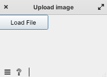
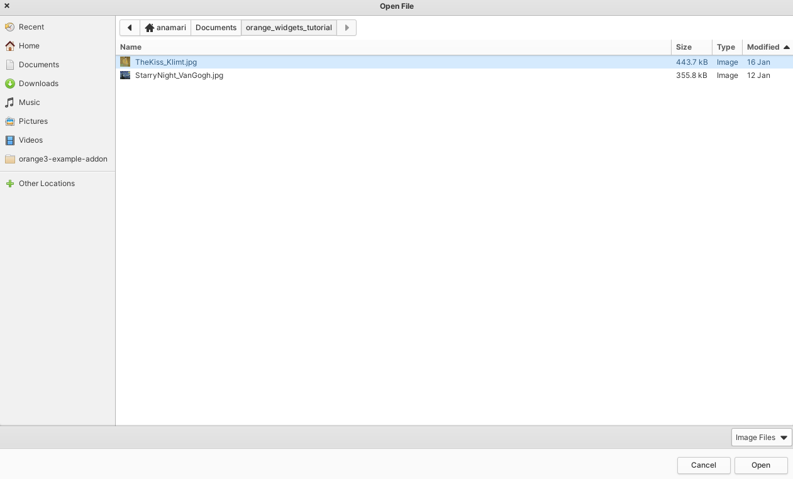
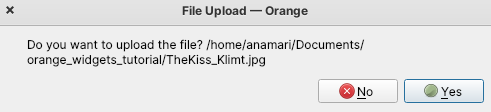

Image Load Widget
Introduction
Let’s start! Follow along, and at the end of the page, you will be a proud owner of the image upload widget.
Note
📌 Before you start, please make sure you have Orange installed. And some IDE to help you start developing (PyCharm, VSCode).
Widget icon

We will use this icon to represent our Widget in the Orange Canvas.
Libraries used in this widget
-
Usage: Used for numerical operations and array manipulation.
Why: Provides efficient array operations and mathematical functions.
import numpy as np
Orange Data
Usage: Used for representing and manipulating data tables
Why: Essential for handling structured data within Orange Widgets.
from Orange.data import Table
Orange Widgets
Usage: Contains utilities for creating graphical user interfaces (GUIs).
Why: Provides tools for building user interfaces for Orange widgets.
from Orange.widgets import gui
Orange Widget settings
Usage: TODO
Why:
from orangewidget.widget import settings
Orange Settings
Usage: TODO
Why:
from Orange.widgets.settings import Setting
Orange Widget
Usage: Inherits from the OWWidget class, the base class for all Orange widgets.
Why: Provides the structure and functionality needed for an Orange widget.
from Orange.widgets.widget import OWWidget, Input, Output, Msg
AnyQt - Usage: Imports Qt widgets and components for creating the graphical user interface. - Why: Orange widgets are GUI-based, and Qt is widely used for GUIs in Python.
from AnyQt.QtWidgets import QMessageBox, QGridLayout
-
Usage: Imports PyQt5 widgets for file dialogs and buttons.
Why: Used for creating file dialogs and buttons in the widget’s graphical user interface.
from PyQt5.QtWidgets import QFileDialog, QPushButton
-
Usage: Used for opening, manipulating, and saving various image file formats.
Why: Needed for image processing tasks, such as opening and saving images selected by the user.
from PIL import Image
Metadata
When defining a new Orange widget, the metadata provides information. This section outlines key metadata attributes.
Widget Attributes
This is the code you will place inside your uploadFile(OWWidget) class, that inherits from OWWidget.
class uploadFile(OWWidget):
name = "Upload image"
description = "Upload image from local directory"
icon = "icons/uploadImage.png"
priority = 100
keywords = "data, load, read, open, image"
category = "Example - documentation"
Note
📌 Priorities impact the widget’s position in the toolbox.
Tip
💡 Place the widget in an appropriate category using the category attribute. In our case widgets will be placed in the documentation category. TODO: Lahko tudi preimenujem kategorijo
Warning
⚠️ Icons specified in the icon attribute should be located in the correct path relative to the module where the widget is defined.
Attributes Explained
Name Attribute
The name attribute represents the display name of the widget as it appears within the Orange3 canvas. Choose a name that describes the widget’s functionality.
Description Attribute
The description attribute provides a brief and clear description of what the widget does.
Icon Attribute
The icon attribute specifies the path to the image file used as the widget’s icon. Icons contribute to the visual identification of the widget in the toolbox.
Priority Attribute
The priority attribute determines the order in which the widget appears within its assigned category in the Orange3 toolbox.
Keywords Attribute
The keywords attribute consists of keywords that serve as quick review of the functionality. TODO: Sem izhajala iz tega, da recimo, izberemo res 5 kljucnih besed, ki opisejo kaj widget dela
Category Attribute
The category attribute classifies the widget into a specific category within the toolbox.
Registration with Orange
First we run the orange-canvas command, then we should see this in the toolbox.
Since we specified the category, our widgets will be placed in that category - so far we only have one widget. The first
widget in the category should be shown now.

If you are new to Orange, you need to click on the widget and it will appear on the orange canvas, so we can start creating workflows with it.

Also, don’t forget to check out, where is the location of other meta data information that we defined.
Tip
💡 Just go to the widget icon in the tool box and place cursor on it
Note
📌 Do you find input, output declaration? And in the bottom left corner name and description?
Declaring Inputs and Outputs
After defining metadata, the next step is to declare Inputs and Outputs for the widget. This widget will be the first in the workflow, so it won’t receive any input. TODO: Ker če zelis sliko prikazat/nekaj delati z njo jo je treba najprej nalozit Therefore, we focus on declaring the Output. In the following code snippet, we define an Output named “image,” that will produce NumPy arrays as an output. This output is set as the default, this is important if we have multiple outputs. TODO: Ali je to pravilna razlaga? Ker ni nikjer napisano. The widget also has control over the summary. If the auto_summary attribute were set to True, Orange would automatically generate a summary. TODO: Ta auto_summary sem dodala, ker je meni metalo ven errorje, ce tega ni bilo definiranega.
class Outputs:
image = Output("image", np.ndarray, default=True, auto_summary=False)
Widget Settings
Tukaj bi potrebovala razlago, zakaj te elemente definiramo, ker ni nikjer razlozeno, samo uporabi se.
proportion = settings.Setting(50)
commitOnChange = settings.Setting(0)
want_main_area = False
buttons_area_orientation = False
Classes for Information, Warning and Error
Base widget has already implemented different classes that help us warn users. You can use them like this:
class Information(OWWidget.Information):
no_file_selected = Msg("No file selected")
no_file_saved = Msg("No file saved")
class Warning(OWWidget.Warning):
file_too_big = Msg("File too big")
file_upload = Msg("Read error:\n{}")
class Error(OWWidget.Error):
missing_file = Msg("No file found")
error = Msg("This is an error message")
unknown = Msg("Read error:\n{}")
Widget Initialization
__init__ method in Python is used to initialize objects of a class - constructor. The task is to assign values, when an object of the class is created. We also add self.image as it will be used for storing the image later.
def __init__(self):
super().__init__()
self.image = None
In the __init__ method we have layout definition, to which we add buttons.
layout = QGridLayout()
layout.setSpacing(4)
self.load_button = QPushButton('Load File', self)
self.load_button.clicked.connect(self.browse_file)
layout.addWidget(self.load_button, 0, 0)
Let’s just check, what we have so far.
Warning
- ⚠️ Before running, make sure you add this to the bottom of the code.
if __name__ == "__main__": from Orange.widgets.utils.widgetpreview import WidgetPreview # since Orange 3.20.0 WidgetPreview(uploadFile).run()
Now run the file and you should see something similar to this:
Upload image from your file system
def browse_file(self):
self.image, _ = QFileDialog.getOpenFileName(
self, 'Open File', '', 'Image Files (*.gif *.jpg *.jpeg *.png *.svg);;All Files (*)'
)
# TODO:Preverjanje ce je datoteka izbrana
msg = QMessageBox()
msg.setWindowTitle("File Upload")
msg.setText(f"Do you want to upload the file? {self.image}")
btn1 = QMessageBox.Yes
btn2 = QMessageBox.No
msg.setStandardButtons(btn1 | btn2)
msg.setDefaultButton(btn1)
msg.buttonClicked.connect(self.popup_clicked)
x = msg.exec_()
Explanation:
The method uses QFileDialog.getOpenFileName to prompt the user to select a file. The selected file path is stored in the self.image attribute.
A message box (QMessageBox) is created to confirm whether the user wants to upload the selected file.
The message box displays the selected file path in the message text.
Two buttons, ‘Yes’ and ‘No’, are added to the message box, and the default button is set to ‘Yes’.
The buttonClicked signal of the message box is connected to the popup_clicked method (explained below) .
The message box is executed, and the result is stored in variable x.
How it should look:
File confirmation
def popup_clicked(self, i):
if i.text() == ("&Yes"):
img = np.array(Image.open(self.image))
Image.fromarray(img).save('uploadedFile.jpg')
self.Outputs.image.send(img)
self.close()
Explanation:
The method takes a parameter i, which represents the clicked button in the confirmation dialog.
It checks if the text of the clicked button is “&Yes,” indicating the user’s affirmative response.
If the user confirms, the method proceeds to read the selected image file (self.image), converts it to a NumPy array, and saves it as ‘uploadedFile.jpg’ using the Pillow library.
The processed image array is sent as output through self.Outputs.image.send(img).
Finally, the widget is closed, concluding the file upload process.
This is the window where we check if we selected the right file - it shows file path. When we check and we are sure, the right file is being uploaded we click Yes - which is already highlighted since we set it as a default button.
Conclusion
So here we end the journey of creating the first widget together. If you are interested, I kindly invite you to proceed with this tutorial and create another widget with me.
See also